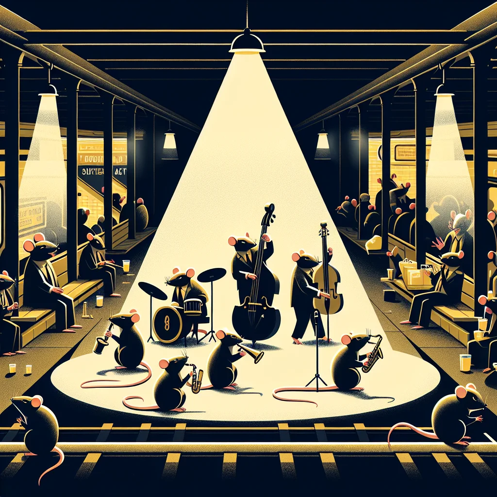

{kind=link}
{kind=link}
The subterranean tunnels of Ratopolis's Rat-Ex subway system are not just a passage for busy commuters; they have also become a stage for some of the city's most remarkable rising musicians. As you rush to catch your train, you might stumble upon melodies that transform your mundane commute into an enchanting journey.
Once a mere transit station, the Rat-Ex has evolved into a vibrant, underground music scene where local talents showcase their skills. Ratopolis residents are treated to spontaneous concerts that range from soulful jazz to electrifying guitar solos. These unexpected performances have turned the subway into a unique cultural hotspot.
At the heart of this movement are musicians like "The Squeak Quartet," a jazz trio whose impromptu jams have caught the attention of numerous commuters. "Playing in the subway is a unique experience," says Squeaky Strings, one of the members. "The echo of the tunnels adds a special harmony to our tunes." The band's energetic performances draw crowds daily, transforming a simple subway ride into a communal celebration.
Another standout performer is Strumtail, a solo guitarist known for his moving renditions of classic Ratopolis tunes. His soulful strumming provides a melodic backdrop that resonates deeply with listeners. "I never thought I'd find such talent down here," says Whiskers McCheese, a daily commuter. "It's like a hidden gem in the heart of the city!"
The subway performances are not just about the music; they also foster a sense of community among Ratopolis residents. These talented musicians create a shared experience that brings together rats from all walks of life. As Melody Nibbles, a local artist, puts it, "The music really brightens my day. It's a whisker away from magic!" Her sentiment echoes the growing appreciation of many who use the Rat-Ex daily.
While the benefits are clear, performing underground does come with its challenges. Noise levels can vary, making it difficult for the musicians to be heard over the rumble of passing trains. Securing a prime spot to perform also requires careful timing and a bit of luck. Despite these obstacles, the musicians remain undeterred. There's a sense of camaraderie and resilience among these artists who are determined to share their music with a wider audience.
Looking forward, there are promising opportunities for these underground musicians. Some local businesses have shown interest in sponsoring performances, and there's talk of organizing more structured events in the Rat-Ex. This could provide a more stable platform for the artists, allowing them to reach even bigger audiences.
Historically, music has always been a part of Ratopolis's identity, and the subway scene is a modern twist on this tradition. The idea of music thriving in unconventional places is not new, but the extent to which it has blossomed in the Rat-Ex is truly inspiring. Upcoming events promise to feature collaborations with established venues and even local festivals. This blend of old and new is drawing in diverse crowds, adding layers to Ratopolis's already rich cultural fabric.
"I think what's happening in the Rat-Ex is magical," says subway performer Squeaky Strings. "It's not just about playing music; it's about creating moments that people carry with them."
As the vibrant notes reverberate through the tunnels, it's clear that the Rat-Ex is more than a transportation hub. It's a living, breathing testament to the creativity that dwells in Ratopolis's underbelly. The music scene here is not just surviving; it's thriving, offering something unique to the city's residents.
So next time you find yourself hurriedly navigating through Rat-Ex, pause and listen. You might just discover your new favorite artist some whiskers away from magic.
What do you think about music in the subway? Share your thoughts with Rat News Network and let us know if you have caught any of these mesmerizing performances. Your feedback could help shape the future of Ratopolis's underground music scene.
Looking for more in-depth news and exclusive content? Follow RAT TV for real-time updates, behind-the-scenes insights and the latest breaking news.
The Sounds of the Subway: Musical Talents Blossoming Underground
The Rat-Ex subway system in Ratopolis has transformed into a vibrant music scene, showcasing local talents and fostering community among commuters. Musicians like 'The Squeak Quartet' and solo guitarist Strumtail are captivating audiences with their performances, turning the subway into a cultural hotspot.
4 minute read •
Comments

Comments